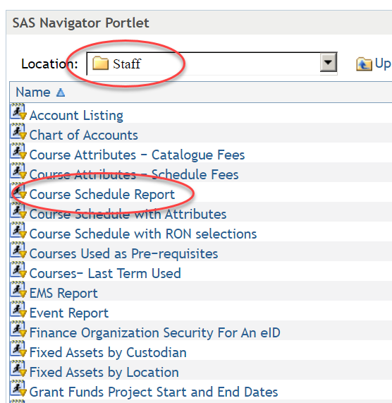

| File name | Term Code | Acad Year | Period Code | Period Name |
|---|---|---|---|---|
| VCU-SOC-202110-FA2020.xlsx | 202110 | AY20-21 | FA2020 | Fall 2020 |
| VCU-SOC-202120-SP2021.xlsx | 202120 | AY20-21 | SP2021 | Spring 2021 |
| VCU-SOC-202130-SU2021.xlsx | 202130 | AY20-21 | SU2021 | Summer 2021 |
| VCU-SOC-202210-FA2021.xlsx | 202210 | AY21-22 | FA2021 | Fall 2021 |
| VCU-SOC-202220-SP2022.xlsx | 202220 | AY21-22 | SP2022 | Spring 2022 |
| VCU-SOC-202230-SU2022.xlsx | 202230 | AY21-22 | SU2022 | Summer 2022 |
| VCU-SOC-202310-FA2022.xlsx | 202310 | AY22-23 | FA2022 | Fall 2022 |
| VCU-SOC-202320-SP2023.xlsx | 202320 | AY22-23 | SP2023 | Spring 2023 |
| VCU-SOC-202330-SU2023.xlsx | 202330 | AY22-23 | SU2023 | Summer 2023 |
| VCU-SOC-202410-FA2023.xlsx | 202410 | AY23-24 | FA2023 | Fall 2023 |
Data and Data Cleaning
This script describes the data and walks through a process of data cleaning. At completion of this script all the individual semester data files will be combined into a single dataframe for analysis.
Sources of data
Data were pulled from the VCU Reporting Center in the Staff | Course Schedule Report as shown below:
Reports are run by semester for the College of Engineering and stored in separate files. Care should be taken to open each file after it’s been saved and RESAVE the file into XLSX format.


The files are named appropriately and stored in the data folder in this repository.
Combining to single data frame
The following section combines each XLSX into a single data frame. The contents of the files are variable in length depending on the number of sections taught during any given semester.
The appropriate block starts one row after the row with the keyword TERM in the first column, denoting the header row. The appropriate block ends with the row prior to the row with the keyword N =.
We’re assuming that all xlsx workbooks share the same columns and names.
The dataframe is stored to a CSV file named ‘final_df.csv’.
# Initialize an empty list to store trimmed DataFrames
trimmed_dfs = []
# Iterate through the list of XLSX file names
for file_name in xlsx_df['file_name']:
# Load the XLSX file into a DataFrame
full_path = os.path.join(directory_path, file_name)
df = pd.read_excel(full_path)
# Find the row index where "TERM" is in the first column
term_index = df.index[df.iloc[:, 0] == "TERM"].tolist()[0]
# Find the row index where "N=" is in the first column
n_index = df.index[df.iloc[:, 0].str.startswith("N =").fillna(False)].tolist()[0]
# Clip the desired block and add column names
trimmed_df = df.loc[term_index + 1 : n_index - 1]
trimmed_df.columns = df.iloc[term_index].values
# Append the trimmed DataFrame to the list
trimmed_dfs.append(trimmed_df)
# Combine the individual dataframes into one big one.
sections_df = pd.concat(trimmed_dfs, ignore_index=True)
# Merge in the term and period data from the xlsx_df dataframe
sections_df['TERM'] = sections_df['TERM'].astype(str)
xlsx_df['term_code'] = xlsx_df['term_code'].astype(str)
sections_df = pd.merge(sections_df,xlsx_df,left_on='TERM', right_on='term_code', how='left')
# Store as CSV file
sections_df.to_csv('sections_df.csv', index=False)